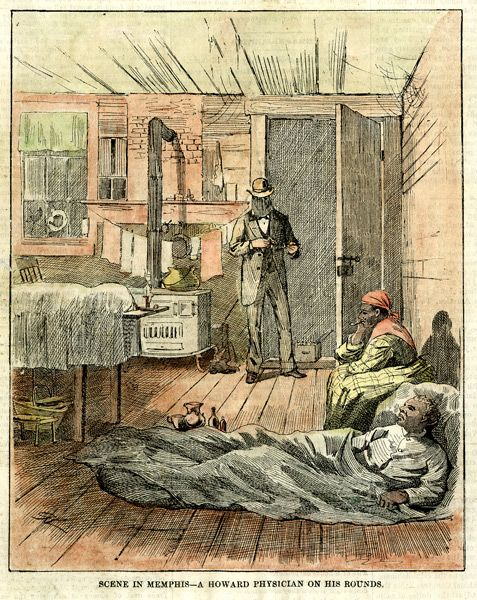
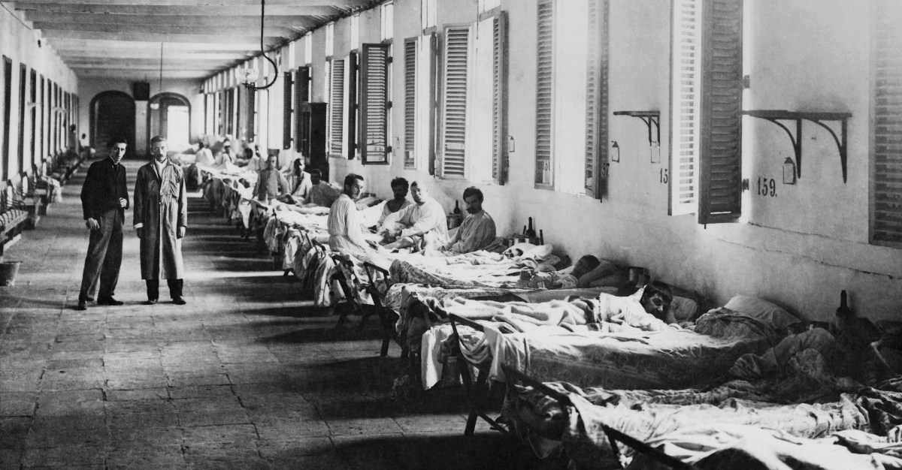
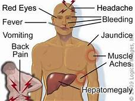

The first major American yellow fever epidemic hit Philadelphia in July 1793 and peaked during the first weeks of October. Philadelphia, then the nation’s capital, was the most cosmopolitan city in the United States. Two thousand free Black people lived there, as well as many recent white French-speaking arrivals from the colony of Santo Domingo, who left the islands as a result of rebellions of enslaved people during the Haitian Revolution (1791-1804). Major Revolutionary political figures lived there, and in the first week of September, Thomas Jefferson wrote to James Madison that everyone who could escape the city was doing so. The epidemic depopulated Philadelphia: 5,000 out of a population of 45,000 died, and chronicler Mathew Carey estimated that another 17,000 fled.
 Most people with yellow fever do not develop symptoms, or the symptoms are very mild. Yellow fever has an incubation period of between 3 and 6 days, so it takes from 3 to 6 days for signs and symptoms to appear after a person is infected.The disease cannot spread among humans. Only infection-carrying mosquitoes spread the disease to humans.The main symptoms of yellow fever are a high temperature, a slow pulse, albuminuria, jaundice, congestion of the face, and hemorrhage, or bleeding. Yellow fever is a hemorrhagic condition that can lead to a high fever, bleeding into the skin, and cell death in the liver and kidneys. If enough liver cells die, liver damage occurs, leading to jaundice, a condition in which the skin takes on a yellowish color.
.
Previous Page